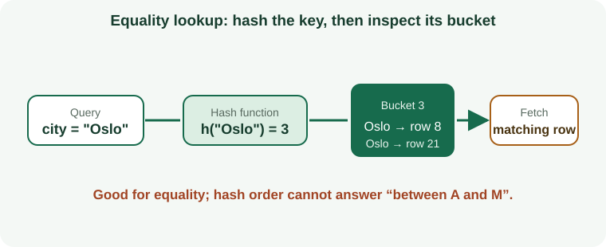

What Is a Database Index?
A database index is an extra data structure that helps locate records for a query. It is similar to a book index: rather than reading every page, the reader follows a value to a smaller set of likely locations. Indexes speed up some reads but require storage and extra work for inserts, updates, and deletes.
How a B-tree Index Search Algorithm Works
A B-tree stores keys in sorted leaves and branch nodes containing separators. A search compares its key at each level, chooses one child, and repeats until it reaches a matching leaf entry. The tree stays balanced so lookups do not scan every key.

Hash Index Lookup Algorithm
A hash index transforms an exact key into a bucket number. It can be effective for equality lookups, but hashing does not preserve value order, so it cannot naturally answer a range such as ?between 20 and 50.?

Inverted Index and Full-Text Search Algorithm
An inverted index maps each term or component value to a list of records containing it. Search can find documents by term without scanning every document, then combine posting lists for multi-term queries.

LSM-tree and Distributed Database Indexing
Log-structured merge designs buffer writes, flush sorted immutable files, and compact them in the background. Reads may consult memory and multiple files. Cassandra also routes primary-key queries by partition tokens, so index choices do not remove distributed-data modeling.

Spatial Index Search with Trees and Regions
Spatial indexes group nearby values into bounding regions or cells. A query checks regions that intersect the requested area and skips regions that cannot contain a result.

Bitmap Index Algorithm for Combining Filters
Bitmap indexes represent matching row positions as bits. Boolean operations such as AND and OR can combine several filters before retrieving the matching rows; they are commonly suited to read-heavy analytical patterns rather than high-concurrency row updates.

Compare Index Types Across Database Systems
PostgreSQL provides multiple access methods; MongoDB has specialized document index types; Cassandra prioritizes partition-key routing and SAI; MySQL depends on storage engine; Oracle includes B-tree/bitmap/domain options; SQL Server adds rowstore, columnstore, and specialized structures.
Choose an Index from the Query Pattern
Start with actual filters, range boundaries, sorts, joins, and output columns. Equality and range needs differ from full-text terms, array membership, geospatial containment, or analytical scans. Choose the smallest structure that supports a measured workload.
How Indexes Affect Reads and Writes
Indexes can reduce rows or pages examined, but a low-selectivity query may still use a scan. Every maintained index adds storage and write work. Specialized structures may generate several entries for one row or maintain separate background processes.
How to Check an Index Execution Plan
Use the platform's explain/actual-plan tools. Compare estimated and actual rows, keys examined, rows fetched, partitions visited, sorts, rechecks, buffer reads, and elapsed time. Test representative data and concurrent writes before calling a change an improvement.
Common Database Indexing Mistakes
- Adding an index to every searchable column.
- Ignoring composite key order and query operators.
- Assuming index presence means the optimizer uses it.
- Benchmarking only reads and ignoring write amplification and storage.
- Copying syntax or features across engines without checking version support.
Database Index Course Roadmap
Begin with the algorithm diagrams, then open the database guide matching your engine. Each index-type page has at least ten focused headings covering the definition, algorithm, query fit, creation example, performance costs, limitations, verification, and official references.
PostgreSQL Index Types: Complete Guide Directory
Open an individual PostgreSQL guide for algorithm diagrams, SQL/CQL examples, query fit, limitations, and tuning advice.
MongoDB Index Types: Complete Guide Directory
Open an individual MongoDB guide for algorithm diagrams, SQL/CQL examples, query fit, limitations, and tuning advice.
Apache Cassandra Index Types: Complete Guide Directory
Open an individual Apache Cassandra guide for algorithm diagrams, SQL/CQL examples, query fit, limitations, and tuning advice.
- ALLOW FILTERING and Index Alternatives
- Clustering Columns and Order
- Indexes on Collections
- Custom Index Implementations
- Materialized Views as a Query Alternative
- Partition Keys
- Primary-Key Indexing and Query Routing
- Storage-Attached Indexing (SAI)
- SASI Indexes (Legacy)
- Traditional Secondary Indexes (2i)
- Storage-Attached Vector Indexes
MySQL Index Types: Complete Guide Directory
Open an individual MySQL guide for algorithm diagrams, SQL/CQL examples, query fit, limitations, and tuning advice.
Oracle Database Index Types: Complete Guide Directory
Open an individual Oracle Database guide for algorithm diagrams, SQL/CQL examples, query fit, limitations, and tuning advice.
Microsoft SQL Server Index Types: Complete Guide Directory
Open an individual Microsoft SQL Server guide for algorithm diagrams, SQL/CQL examples, query fit, limitations, and tuning advice.
Database Indexing Questions
Which index is fastest?
There is no universal fastest index. The correct choice depends on operators, data distribution, selectivity, storage engine, cache, and write rate.
Will more indexes improve SEO or database speed?
Indexing a website page and indexing database rows are different ideas. Extra database indexes do not guarantee faster queries; every index should be measured against a real query.